LOCAL BUILD
Zombie Co-op Prototype
Executable only. No launcher or launch arguments have been verified.
1A065548727CAE3CBF0993711A52039FEA3FEC006880C1E7C1B2C3B5663F7983Recorded reports describe their original snapshot. Technical checks do not establish human art, gameplay or performance acceptance.
Existing captures; opening this page does not run the game or create new acceptance evidence.
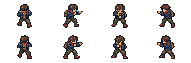
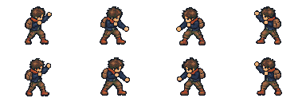
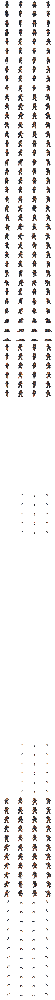
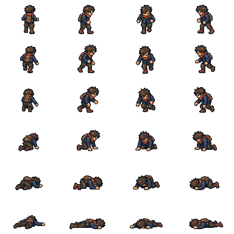
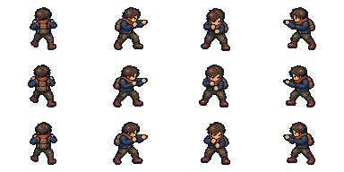
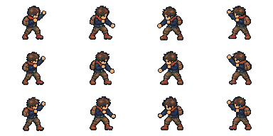
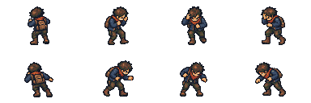
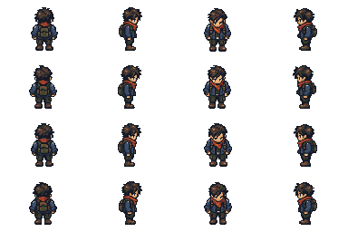
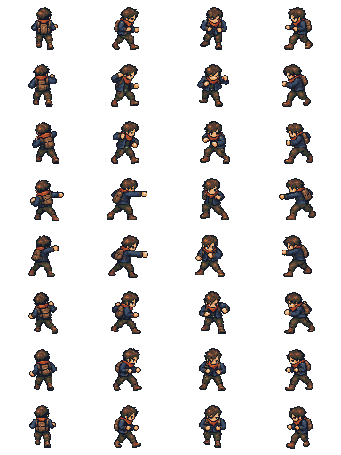
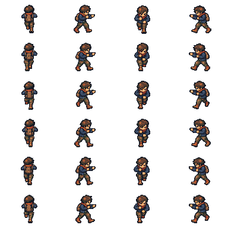
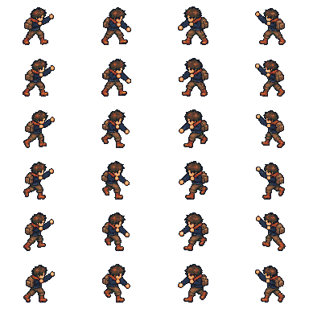
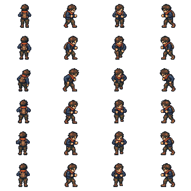
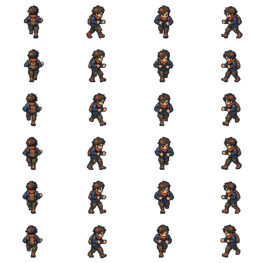